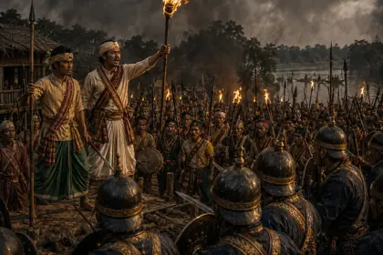
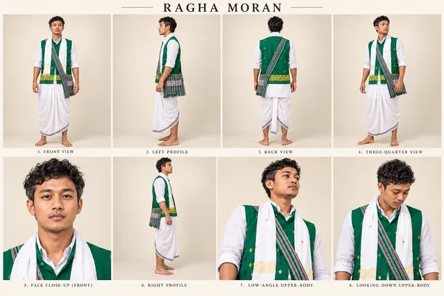

1769
d. 11 April 1770 · Rebel leader and Borbarua

Flogged over elephant levies in September 1769, which sparked the revolt. Became Borbarua and was killed in April 1770 by nobles aided by Kuranganayani.
Record confidence: high.